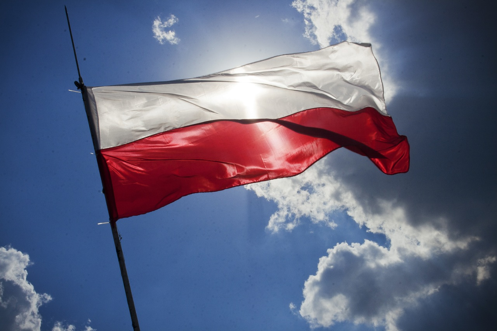

As you may, or probably may not, know, I've moved to Poland last April. Don't bother asking why as I'm still looking for an answer to. There are a few good reasons, which I'm sure the male readers will have already come up with, but it was mostly an instinctive decision. And I'm not regretting it so far.
There are quite a few differences between living in Poland and in my home country, Italy. Besides the obvious different climate, there are some totally unexpected or not exactly what I expected.
Disclaimer: these are just my experiences. I claim not to have a perfect nor complete understanding of Polish customs and society. Take everything following with a pinch of salt (or, better, two).
Poles drink. A lot

Poland is 13th on the list of annual alcohol consumption per capita. Not surprising at all. But if you actually come here you will realize the why: alcohol is everywhere. You need a bottle of whisky at 03:00? No problem, hit up one of the thousands of Alkohole 24h shops all around Poland and you will find everything from whisky to beer to wine to soft drinks to make cocktails with your favourite spirit. Or, are you driving and forgot to bring along the beer? Nie ma problemu, there's alcohol at most gas stations too! I've been told there was in discussion a law to prohibit selling alcohol in those places but it caused so much outrage that the proposal was taken back. Seeing a lone driver buying 6 cans of beer for a 1 hour drive on a highway isn't uncommon.
Main thing is, even if most Poles don't like to admit that they drink much, they do. All of them. Young and old. I can't count how many old ladies I found buying spirits at the nearby supermarket. Old in their sixties. And I mean spirits, not just wine and beer. They go straight to the strong stuff. Yet I didn't see more drunkards on the streets. No more than London or Paris. Not even on Saturday nights there are many scenes of girls throwing up in the middle of the streets or guys being obnoxious after too many drinks. Despite drinking a lot, they have quite an high tolerance to alcohol (to the dismay of many foreigner men thinking of having an easy time with the girls...). This makes for alcoholism being a lesser problem than you'd expect considering the sheer amount of alcohol being ingested by the local population.
Yet it is seen as a huge problem by the politicians: everywhere along the "no smoking allowed" signs there are also "no alcohol allowed" signs. Even where you wouldn't expect, like buses or public restrooms. Drinking is just part of their culture, it is not unusual to be stopped on the streets by poor people asking for 2-3 złoty "for vodka". Especially if you look rich or foreigner. They don't bother you much, just saying no is enough to stop them asking. And I appreciate the honesty.
There are no rules regarding eating
As an italian, I'm used to have breakfast, lunch around 12:00-14:00, maybe aperitif around 17:00-19:00 and dinner at 19:00-21:00. Some exceptions can be done because of work, obviously, but those are the general times we eat. Conscious exceptions are frowned upon or considered weird. And we have a very strict etiquette about food, like salads come after the main dish, you don't eat bread with pasta, no cappuccino after 12:00 (looking at you 'mericans...), spirits/liqueurs are to be drank at the end of the meal etc.
Poles don't give a shit about those rules. The only meal you can be sure they have is breakfast: at home. Hardly any Poles have breakfast at a bar. The most they do is grabbing a coffee on the go but they have already eaten something before leaving home. Which is way more healthy btw and I hope the hordes of Starbucks, Costa Coffe, KFC and such won't change it ever. This is a custom that I'd like everybody to follow, actually.
Lunch? They call it obiad and is anywhere between 12:00 and 17:00. Which means it gets mixed with "supper", usually from 17:00 till 22:00. Or, more commonly, anytime they have a moment to eat. Ah, don't call it dinner as that means also obiad, but use kolacja, which is awfully close to the italian colazione, breakfast, to my utter confusion.
Basically, just eat when you want and you'll be fine in Poland.
Rules at the table? Nothing of this sort. I've seen everything, from ice cubes being added to wine ("it's not cold enough!"), to the omnipresent cappuccino along with pasta, to cooking pasta with a broth cube (!), to eating salad, then soup, then cake, then fruits and then potatoes, to eating salad along with pasta/pizza/soup because "we Poles like to mix things up". Even ordering a pint of beer together with a glass of vodka and happily sipping either, alternatively. The italian in me dies a little bit whenever I see something along those lines. I will have to become Polish very soon or risk dying altogether.
Food quality isn't great
Maybe I'm spoiled by growing up in Italy but I am having an hard time finding a supermarket that sells good quality food. Especially fruits, seafood and meat. I had expected before coming here to have good meat at least as polish cuisine is heavily meat-based but no, it's hard to find any cut that is not nearly tasteless, often even the most expensive ones are bland in flavours. And I'm used to tens of different cuts, even at supermarkets. Here it seems they use the same 6-7 cuts for cooking every meat dish, which is baffling. Cheeses are fine, albeit most are imported. Try the Lithuanian cheeses. Vegetables are ok, fruits is not but for the delicious apples (but I don't like them so I'm screwed). I have no idea why a banana becomes dark in 2 days here when in Italy takes 4-5 days (and it's hotter there too). They also suffer from the same problem of Germany: they have tens of different kinds of bread but no clue how to bake it. I'd kill for a slice of Altamura Bread. Here are the usual dark, rye, bread-with-some-nuts-or-seeds in/on kind of breads that dominate the market. For really good baked bread you have to go up in the ladder of quality (and cost).
Butter and margarina are aplenty and good. Olive oil is expensive, as you could expect. They sell enormously-sized yeast, 75-100g, which I wonder still what they use it for as the most they bake are Pierogi.

Pizza can be surprisingly good, I know a couple of places where it is really good. No, they aren't even run by italian, real polish pizzerias. Fish is nowhere to be seen, especially at restaurants. In supermarkets is always frozen and imported but for salmon and sardines. Generally, avoid it.
Foreigners are still weird
Poles aren't used to meet foreigners. Being on the other side of the Iron Curtain for nearly half a century and immediately after 2 decades of emigration has made Poland one of the countries with the fewest number of immigrants in EU. Something along the lines of 700.000 foreigners among 38 millions of Poles. If you take into account that most of those are Ukrainian immigrants, who visually are very close to Poles, being a mediterranean-looking guy means I am looked at with a mix of curiosity (most of the time), interest (sometime), aversity (more than seems sane to), hate (a couple of times). I stand out very clearly among the local population, it's impossible for me to pass as a Polish citizen of Polish ancestry (only for a Polska Roma maybe). While this can have its advantages ("hey look, an italian guy!"), it's very unsettling at times to be looked at by men and women of all ages just because they seem to never or very rarely having seen a dark-skinned man. It never happened to me anywhere else in the world, not even as a white man in Dominican Republic.
Yet, despite my different look, Poles are so little used to meet foreigners that 99,9% of the time I'm first addressed in Polish and only after they realize I don't understand, in English. Even in touristic places like the Palac Kultury i Nauki, where they'd expect to see many foreigner tourists, I was first addressed in Polish. Sometimes I wonder if it's more not being used to foreigners or not being able to conceive why somebody who is not polish would come to live in Poland. I've been asked many times why I chose Poland over Italy and so far I couldn't come with a definite, credible answer.
This shows also how many Poles consider their country ugly and/or uninteresting. Which I disagree with.
The Communist Blocks

They're everywhere. Nearly all Polish cities were mostly or totally destroyed during WWII and the communist governments following it had to rebuild a lot of lost housing. They followed the example of Soviet Russia and built those enormous, grey, squared-windows blocks everywhere, in every city.
Let's face it, they are not pretty. And Poles know it.
Still, they aren't as bad looking as some examples of western architecture that you can see in the peripheries of Madrid, Rome or San Francisco. They have a bad reputation for being "the ugliest ones" but it's not rightfully earned, there are worst buildings in the so called "first world" countries. Only they may look uglier because they are much bigger (some have like 4 stairwells and 8 different entrances for the same building) and really everywhere. Put a single ugly building in a pretty city and it will look like a mistake; put tens of ugly buildings in a single city and the whole city will look bad.
Yet, they are extremely functionals. Communists apparently hated lifts so most of them which are less than 6-7 floors have none. Some have installed one after the coming of democracy. So no lifts for shorter buildings. But the stairs are large. The steps aren't too tall or too narrow. I bet some russian architect made a research on this and found the precise size they should be. My 42 EU size feet fits perfectly. Amazing. Main building door is 99% of the time activated by an electronic system where you press the number of your apartment, the key button and a 4 digit code to open the door. Alternatively, there's the key. It's a bit like in Ukraine but over there is still mechanical.
And the rooms inside are warm. Very. The external walls are thick while the walls separating two apartments are not, which helps to keep the cold away and sharing the heating warmness from apartment to adjacent apartment (and also hearing the discussions of your neighbours). Every building has a basement, including new ones, where you can store some of your stuff, included in the rent. Also most if not all have a stair to access the roof which Poles don't use it at all as I haven't seen anybody on any roof in 5 months of staying (and it was during summer). A large part of all buildings have room to park the car/bike in front or on the back of them, many green areas around and occasionally a recreational area with basketball court, ping pong table and entertainment area for children. Speaking of which, I've seen toys inside bank offices, in every airport and even in a few big shops. They do care about the children (but they don't make many anymore).
Beds
A bed is a bed. This is a bed (as the wise cat clearly agrees):

Anything else isn't. In Poland they often try to sell you a sofa-bed for a bed. It is not, dear Polish friends; it's just a sofa that can be opened and you can sleep on. That doesn't make it a bed as much as being able to sleep on an airplane seat make it a proper bed. Understood?
The Language
Every foreigner here has to face it on a day to day basis: Polish is hard. And every foreigner complains about it. And every Poles understand it's impossible to master it in less than 1 year. Or 2.
Personally, I don't think it needs so long at all. 1 year is a good guess for most, intelligent, people. 2 only if you don't give studying Polish much time or are very bad at languages in general. The worst part are the many declension cases (which was expected) and the pronunciation (which was not): one dipthong like "rz", "sz", "cz", or difficult sounds like "ł" are easy enough to pronounce (and they don't change according to the position!), but when more than 1 is present in a single word my brain spins. Try to pronounce words like "Szczebrzeszynie" or "chrząszcz" (but have first at hand the number of your otolaryngologist for when your tongue gets stuck).
So get ready to use "nie mowie po polsku" (I don't speak Polish) very often and take aside 1 hour each day to study Polish if you are serious about staying in Poland. Which it is supposed to be your duty as a modern, globalized citizen of the world.
But I know most won't care, so English will be your anchor. Luckily for them, 90% of the younger generations, <30yo, know basic to average english. Some have really amazing english levels. Yet it's not Netherlands or Scandinavia, as soon as you are outside of the most touristic areas even speaking with 20yo people will become hard if not totally impossible. There's a huge gap between well educated people and those who have average or lower than average education: the english of the latter will be at most basic, if not that bad that they could as well speak polish. If you consider that many 40+ well educated people didn't study english at school at all (because, Russians!), you can imagine how small is the population range that a foreigner can have a normal discussion in english. The situation is clearly improving, in 20 years you could live here like you can now in Scandinavia, without any knowledge of the local language, but for now be warned.
Traffic is amazingly low
I'm sure all my polish friends will cry in outrage at this but trust me, it's nowhere near what it's like to drive in Rome or Naples. That's hell on earth compared to Warsaw. There's a reason why we say
if you can drive in Naples, you can drive everywhere
and it's not because of the very strict driving schools. Seriously, traffic is mostly smooth but for a couple of spots at the usual rush hours. Finding a parking spot for your car is unbelievably easier than back in Italy: in Warsaw's centre, in front of the Palace of Justice, you can be sure to find an empty spot at every hour. Nothing of this sort can be said for any major italian city; if I had found one like that I would consider it my lucky day. Here it seems normal to have a few empty spots here and there even in the very centre of the city on a weekday morning. I guess because most poles don't have a car (due to poverty or choice) and rely on the, mostly excellent, public transportation and bike lanes systems. Admittedly, I don't feel the need to buy a car anytime soon either. Streets are also very wide and there's room to park cars everywhere. But don't try to park your car too close to a turn, it will get confiscated in a nanosecond and you will be frowned upon by any bystander. I saw it myself and it wasn't nice for the driver, as much as it wasn't for the driver who got invested by a tram because he didn't clear up the path for it and was also fined for interrupting public transportation.
Trams are evil here, don't mess with them.
Weather
I talk about the weather last, contrarily to most foreigners (trying to be original, see?). I have not yet experienced the cold polish winter but for a brief stint last year when I made a supervising trip of 5 days. That was enough to give me a good idea though.
Yes, it is cold. Grey too. And extremely windy, which is the worst thing you can face when on a 50m wide and 2km long street without any covering but for leafeless trees. Try to cross a bridge over the Vistula in the middle of the winter and I'm sure you will be ready to be sold as frozen meat before you reach the other end. Nobody crosses a bridge here in winter. Nobody that plans to survive, at least. Often walking out feels like a race from a heated place to the next with the prize being survival. Once I took the road from the Stadion Narodowy (the football stadium) north towards the Praga neighborhood along the river because I got off the tram one stop earlier than I intended: worst decision ever. It was like 1km or even less but I felt like the poor Athenian soldier running back to Athens after Marathon battle. Only with harsh cold and strong wind.
Yet is getting better. Last winter was below -10°C only for a couple of weeks, most of the time was between 0 and -10, which is mild here. Spring has been pretty ok and sunny and this summer has been universally considered as one of the warmest ever. It felt like Italy a handful of days. We have hope this winter won't be that bad after all.
If it won't, luckily, as I said above, houses are usually very warm. Restaurant and bars even more as they put the heating system to the maximum out of sheer hate of winter, there's no other possible explanation: it is normal to stay in t-shirts inside and then having to put 3 layers on before going out. Perfect to get a cold. Which considering the abnormal number of pharmacies available seems to be quite common.
Conclusion
All in all I'm enjoying my staying in Poland. People are generally very nice, educated and respectful. Honest too. The problems I have told of above aren't that bad, nothing that would make me decide to go back to Italy. Poland at least is improving its shortcomings, Italy has been stagnating for decades. Unfortunately, not just the economy.
P.S.=for any criticism, correction or outraged messages, feel free to mail, comment or @'s me on Twitter.
Photos courtesy: Poland Flag, Vodka, Pierogi, Communist Blocks, Bed and Cat
Tweet Go Top
comments powered by Disqus